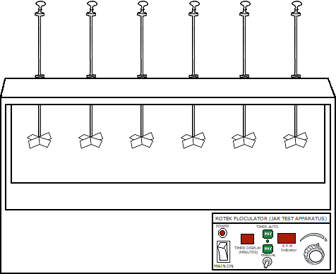
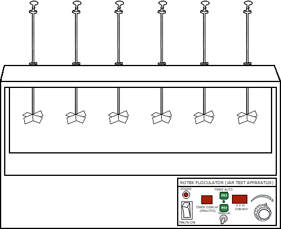
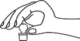
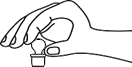

Alum Coagulation
Objective:
To determine the optimum Alum dosage for water or waste water treatment by Jar test.
Apparatus used:
Nephelometer, Nephelometer tube, Pipette, Beaker, Stirrer and Measuring cylinder etc.
Solutions used Water samples, Alum solution (Al2(SO4)318H2O) Description Coagulation is the process of addition of a chemical to de-stabilize a stabilized charged particle.Flocculation is a slow mixing technique which promotes agglomeration and helps the particles to settle down.


 



Take 500ml of water sample in six beakers using measuring cylinder.


sample
Add different dosages of Alum solution to the six beakers with one as blank.


 

Squeeze the pipette bulb and dip the pipette into the Alum solution
Press the up arrow on the bulb to take the liquid up into the pipette
Press the down arrow on the bulb to release Alum solution
0ml
Stir the mixture thoroughly at 100rpm for one minute and at 30rpm for twenty-nine minutes.
Place the beaker in the appropriate positon

00
0 0
0 0 0
000
Take the Nephelometer tube fill it with the sample in the beaker.
Calibration of Nephelometer
Place the sample cell with distilled water in the Nephelometer. Set readings to zero by adjusting coarse and fine knob.


0.000


Now place 100 NTU calibration standard in the sample holder of Nephelometer. Adjust the calibrate knob to set the readings to 100.
0.000
Measurement of Turbidity of Samples
Measure the Turbidity of samples by placing sample tube in the Nephelometer.
0.000
Observations :
| Sample no. | Volume of Alum solution added (ml) | Alum Dosage (mg/l) | Turbidity (NTU) |
1ml of Alum solution => 10mg of Alum per litre
Characteristic Curves
Turbidity v/s Alum dosage
Optimum alum dosage = mg/l
✔
✘
Inference:
What is the optimum quantity of Alum required for the given sample with Turbidity?
Titration =
Repeat the same
procedure
1. Take a measuring cylinder
2. Fill it upto 500ml with given water sample
3. Take a 1000ml beaker4. Pour 500ml of water sample taken into the beaker for remaining 5 beakers